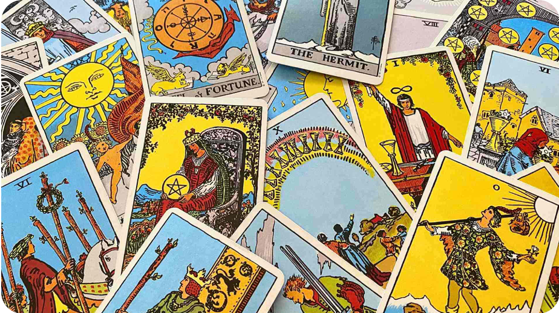
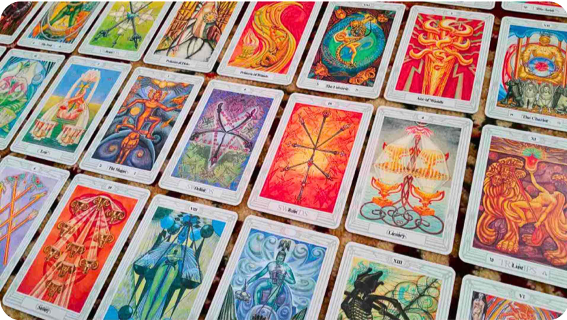

萊德偉特塔羅牌

馬賽塔羅

塔羅牌起源於14至15世紀的歐洲，最初是一種紙牌遊戲，後來在18世紀被神秘學者賦予占卜與心理啟示的功能，成為靈性探索工具。 是一種具有神秘學與心理分析背景的占卜工具，由78張牌組成，分為22張大阿爾克那和56張小阿爾克那。大阿爾克那代表人生重要階段或事件，小阿爾克那分為四種花色（權杖、聖杯、寶劍、錢幣），象徵日常生活的各種面向。 每張牌的圖像與象徵意義引導使用者反思內在情感、挑戰或未來可能的發展。塔羅牌常用於探索自我、做出決策或尋求心理支持。